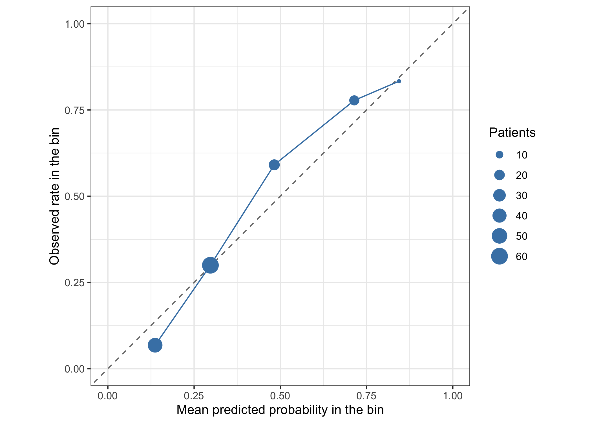
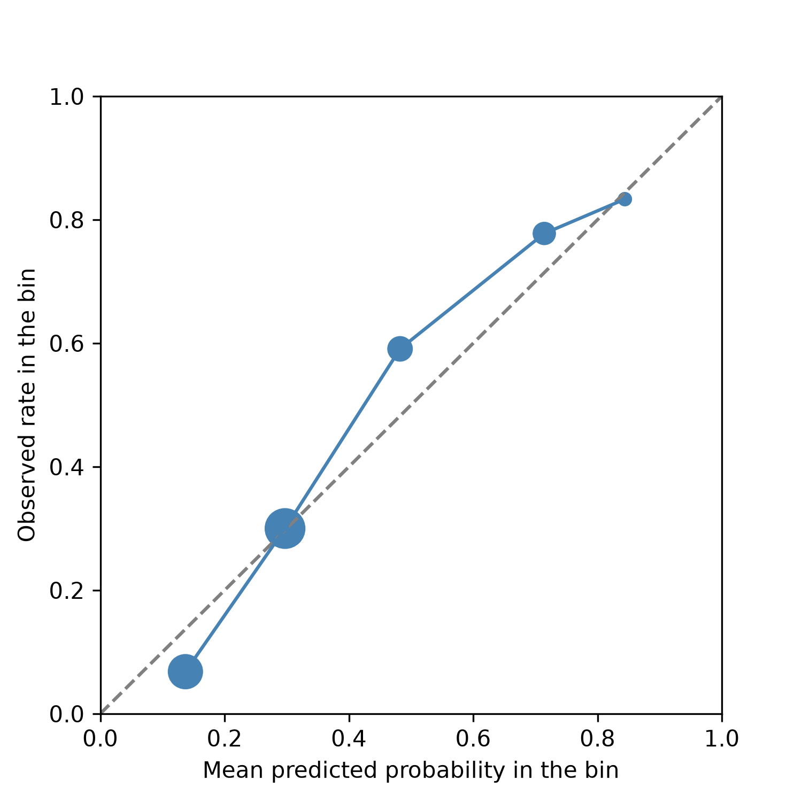

# Packages for this exercise. If one is missing, remove the # and run this line once:
# install.packages(c("tidyverse", "tidymodels"))
library(tidyverse)
library(tidymodels)
theme_set(theme_bw()) # white background for every plot
options(pillar.sigfig = 3) # show three significant figures in tablesExercise 4.4 — Is a predicted 0.7 worth 0.7?
ImportantA suggested addition, not part of the original module
This exercise has no page in the original version of the module. It answers a question Exercise 4.3 leaves open: the threshold there assumed that the predicted probabilities mean what they say. Accept, rewrite or remove it; nothing else depends on it.
Exercise 4.3 chose a threshold of 0.2 because of what each mistake costs. That choice assumed something it never checked: that among the people the model gives a probability of about 0.2, about 20% really do have diabetes. A model whose probabilities match what happens in this way is calibrated.
Accuracy, sensitivity and specificity cannot tell you whether a model is calibrated, because they throw the probability away at the threshold and only look at the predicted classes.
Theory: calibration in the large; the calibration table and curve; why small groups give noisy rates; the Brier score; a model that ranks people well can still give the wrong probabilities.
NoteThe plots are for looking at
The code for every plot is folded away just above it, in case you are curious, and all of it is in the notebook linked at the top of each tab. You are not expected to write it yourself.
Download this exercise as an R Markdown notebook (.Rmd): the text and every code cell of the R version, including the code for the plots, with the blanks left for you to fill in. Open it in Positron or RStudio and run it a chunk at a time.
Packages and data
The same people, split and model as Exercise 4.3: diabetes ~ glucose, fitted on 600 people, with predicted probabilities for both the training rows and the 150 test patients.
diabetes <- read_csv("data/diabetes_clean.csv") |>
select(glucose, mass, age, diabetes) |>
mutate(diabetes = factor(diabetes, levels = c("neg", "pos")),
diabetes_dummy = if_else(diabetes == "pos", 1, 0))
test_rows <- seq(1, nrow(diabetes), by = 5) # every fifth person is held back
train <- diabetes[-test_rows, ]
test <- diabetes[test_rows, ]
log_fit <- logistic_reg(mode = "classification") |>
set_engine("glm") |>
fit(diabetes ~ glucose, data = train)
train_preds <- predict(log_fit, new_data = train, type = "prob") |> bind_cols(train)
test_preds <- predict(log_fit, new_data = test, type = "prob") |> bind_cols(test)Part 1 — Calibration in the large
The simplest check: is the average predicted probability equal to the proportion of people who actually have diabetes (the prevalence)? Do it on the training rows and on the test patients:
train_preds |>
summarise(mean_predicted = mean(.pred_pos), prevalence = mean(diabetes_dummy))#> # A tibble: 1 × 2
#> mean_predicted prevalence
#> <dbl> <dbl>
#> 1 0.367 0.367test_preds |>
summarise(mean_predicted = mean(.pred_pos), prevalence = mean(diabetes_dummy))#> # A tibble: 1 × 2
#> mean_predicted prevalence
#> <dbl> <dbl>
#> 1 0.349 0.353On the training rows the two numbers are identical, 0.367. That is not evidence of anything: a logistic regression with an intercept always makes its average fitted probability equal the prevalence of the rows it was fitted on. On the test patients the model predicts 0.349 on average, and 0.353 of them have diabetes: close.
This is the weakest calibration check there is, one number against one number. A model that gave everybody a probability of 0.353 would pass it perfectly, and be useless.
ImportantLearning points
- A model is calibrated when, among the people it gives a probability \(q\), a proportion of about \(q\) have the outcome.
- Calibration in the large compares the mean predicted probability with the prevalence. Check it on the test set: on the training rows a logistic regression passes by construction.
Part 2 — The calibration table, step by step
To look closer, put the test patients into five groups (bins) by their predicted probability: 0 to 0.2, 0.2 to 0.4, and so on. In each bin count the people, average their predicted probabilities, and compute the proportion who actually have diabetes. For a calibrated model the last two numbers are close in every bin.
Step 1: give each patient a bin.
test_binned <- test_preds |>
mutate(bin = cut(.pred_pos, breaks = seq(0, 1, by = 0.2), include.lowest = TRUE))
test_binned |>
select(glucose, diabetes_dummy, .pred_pos, bin) |>
head()#> # A tibble: 6 × 4
#> glucose diabetes_dummy .pred_pos bin
#> <dbl> <dbl> <dbl> <fct>
#> 1 194 0 0.850 (0.8,1]
#> 2 117 1 0.276 (0.2,0.4]
#> 3 122 0 0.312 (0.2,0.4]
#> 4 111 0 0.236 (0.2,0.4]
#> 5 142 1 0.477 (0.4,0.6]
#> 6 102 0 0.184 [0,0.2]Step 2: summarise each bin. Fill in the observed rate, the proportion of people in the bin who have diabetes:
# Replace every ______ below, then run this cell.
calibration_table <- test_binned |>
group_by(bin) |>
summarise(n = n(),
mean_predicted = mean(.pred_pos),
observed_rate = mean(______))
calibration_table
TipStuck?
diabetes_dummy is 1 for diabetes and 0 for none, so its mean in a bin is the proportion of the bin with diabetes.
The calibration curve draws this table: mean predicted against observed rate, one point per bin, sized by the number of patients in it. A perfectly calibrated model puts every point on the dashed diagonal.
Code for this plot (optional)
ggplot(calibration_table, aes(x = mean_predicted, y = observed_rate)) +
geom_abline(linetype = "dashed", colour = "grey50") +
geom_line(colour = "steelblue") +
geom_point(aes(size = n), colour = "steelblue") +
coord_equal(xlim = c(0, 1), ylim = c(0, 1)) +
labs(x = "Mean predicted probability in the bin",
y = "Observed rate in the bin", size = "Patients")
The middle of the range is close to the diagonal. In the lowest bin the model says 14% on average, and 3 of the 44 patients (7%) have diabetes.
Is a gap a fault in the model, or just a small bin? The top bin holds 6 patients: one more or one fewer person with diabetes moves its observed rate by 0.17. A gap in a bin of 6 people tells you almost nothing; a gap in a bin of 60 tells you much more. This is why a calibration table should always show the number of patients in each bin, and why you should not read a story into every wobble of the curve.
ImportantLearning points
- The calibration table bins the predicted probabilities and compares the mean prediction with the observed rate in each bin.
- On the calibration curve, points on the diagonal mean the probabilities can be taken at face value.
- Small bins give noisy observed rates: always report the number of patients per bin.
Part 3 — Same order, different numbers
Now break the probabilities on purpose. Squash every prediction two thirds of the way towards 0.5:
\[q = 0.5 + \frac{p - 0.5}{3}\]
A probability of 0.05 becomes 0.35, 0.5 stays 0.5, and 0.86 becomes 0.62. The patients come out in exactly the same order: whoever had the higher probability before still has the higher probability after. Only the numbers change.
test_preds <- test_preds |>
mutate(squashed = 0.5 + (.pred_pos - 0.5) / 3)
test_preds |>
summarise(lowest_before = min(.pred_pos), highest_before = max(.pred_pos),
lowest_after = min(squashed), highest_after = max(squashed),
same_order = all(rank(.pred_pos) == rank(squashed)))#> # A tibble: 1 × 5
#> lowest_before highest_before lowest_after highest_after same_order
#> <dbl> <dbl> <dbl> <dbl> <lgl>
#> 1 0.0445 0.858 0.348 0.619 TRUEThe Brier score measures how far the probabilities are from what happened. For each patient take the squared difference between the predicted probability and the outcome coded 0 or 1, then average:
\[\text{Brier} = \frac{1}{m}\sum_{i=1}^{m} (\hat{p}_i - y_i)^2\]
It is the mean squared error from Exercise 3.2, applied to probabilities: 0 is perfect, and lower is better. Compute it before and after squashing:
# Replace every ______ below, then run this cell.
test_preds |>
summarise(brier_before = mean((.pred_pos - diabetes_dummy)^2),
brier_after = mean((______ - diabetes_dummy)^2))Why it matters. Apply the threshold from Exercise 4.3, 0.2, to both sets of probabilities, and count the people sent for a test and the cost (5 for a missed case, 1 for an unnecessary test). Then do the same at 0.5:
tibble(threshold = c(0.2, 0.5)) |>
cross_join(test_preds) |>
group_by(threshold) |>
summarise(tested_before = sum(.pred_pos >= threshold),
cost_before = 5 * sum(diabetes == "pos" & .pred_pos < threshold) +
sum(diabetes == "neg" & .pred_pos >= threshold),
tested_after = sum(squashed >= threshold),
cost_after = 5 * sum(diabetes == "pos" & squashed < threshold) +
sum(diabetes == "neg" & squashed >= threshold))#> # A tibble: 2 × 5
#> threshold tested_before cost_before tested_after cost_after
#> <dbl> <int> <dbl> <int> <dbl>
#> 1 0.2 106 71 150 97
#> 2 0.5 31 152 31 152At 0.2 the original probabilities send 106 of the 150 patients for a test, at a cost of 71. The squashed probabilities send all 150, at a cost of 97: exactly what testing everybody without any model would cost. Everything the threshold gained has been lost, although the patients are in the same order as before.
At 0.5 the two are identical, 31 tested at a cost of 152, because 0.5 is the one value the squashing leaves where it was. A team that never moved off the default threshold would never notice the problem. Calibration matters the moment a probability is compared with a number: a threshold chosen from costs, or a risk told to a patient.
ImportantLearning points
- Two models can put patients in exactly the same order and still give different probabilities.
- The Brier score, the mean squared error of the probabilities, notices when the probabilities are wrong.
- A threshold chosen from costs is only right if the probabilities are calibrated.
Download this exercise as a Jupyter notebook (.ipynb): the text and every code cell of the Python version, including the code for the plots, with the blanks left for you to fill in. Open it in Jupyter, VS Code or Positron and run it a cell at a time.
Packages and data
# Packages for this exercise. If one is missing, install it once from a terminal
# (in a Jupyter notebook, type %pip instead of pip):
# pip install pandas numpy matplotlib scikit-learn
import pandas as pd
import numpy as np
import matplotlib.pyplot as plt
from sklearn.linear_model import LogisticRegressionThe same people, split and model as Exercise 4.3: diabetes ~ glucose, fitted on 600 people, with predicted probabilities for both the training rows and the 150 test patients.
diabetes = pd.read_csv("data/diabetes_clean.csv")
diabetes = diabetes[["glucose", "mass", "age", "diabetes"]]
diabetes["diabetes_dummy"] = (diabetes["diabetes"] == "pos").astype(int) # 1 = pos, 0 = neg
is_test = diabetes.index % 5 == 0 # every fifth person is held back
train = diabetes[~is_test]
test = diabetes[is_test]
log_fit = LogisticRegression(C=np.inf)
log_fit = log_fit.fit(train[["glucose"]], train["diabetes_dummy"])
train_preds = train.copy()
train_preds["prob"] = log_fit.predict_proba(train[["glucose"]])[:, 1]
test_preds = test.copy()
test_preds["prob"] = log_fit.predict_proba(test[["glucose"]])[:, 1]Part 1 — Calibration in the large
The simplest check: is the average predicted probability equal to the proportion of people who actually have diabetes (the prevalence)? Do it on the training rows and on the test patients:
print("training rows: mean predicted", round(train_preds["prob"].mean(), 4),
"| prevalence", round(train_preds["diabetes_dummy"].mean(), 4))#> training rows: mean predicted 0.3667 | prevalence 0.3667print("test patients: mean predicted", round(test_preds["prob"].mean(), 4),
"| prevalence", round(test_preds["diabetes_dummy"].mean(), 4))#> test patients: mean predicted 0.3493 | prevalence 0.3533On the training rows the two numbers are identical, 0.367. That is not evidence of anything: a logistic regression with an intercept always makes its average fitted probability equal the prevalence of the rows it was fitted on. On the test patients the model predicts 0.349 on average, and 0.353 of them have diabetes: close.
This is the weakest calibration check there is, one number against one number. A model that gave everybody a probability of 0.353 would pass it perfectly, and be useless.
ImportantLearning points
- A model is calibrated when, among the people it gives a probability \(q\), a proportion of about \(q\) have the outcome.
- Calibration in the large compares the mean predicted probability with the prevalence. Check it on the test set: on the training rows a logistic regression passes by construction.
Part 2 — The calibration table, step by step
To look closer, put the test patients into five groups (bins) by their predicted probability: 0 to 0.2, 0.2 to 0.4, and so on. In each bin count the people, average their predicted probabilities, and compute the proportion who actually have diabetes. For a calibrated model the last two numbers are close in every bin.
Step 1: give each patient a bin.
test_binned = test_preds.copy()
test_binned["bin"] = pd.cut(test_binned["prob"], bins=[0, 0.2, 0.4, 0.6, 0.8, 1],
include_lowest=True)
test_binned[["glucose", "diabetes_dummy", "prob", "bin"]].head()#> glucose diabetes_dummy prob bin
#> 0 194 0 0.849561 (0.8, 1.0]
#> 5 117 1 0.275702 (0.2, 0.4]
#> 10 122 0 0.312008 (0.2, 0.4]
#> 15 111 0 0.235765 (0.2, 0.4]
#> 20 142 1 0.477461 (0.4, 0.6]Step 2: summarise each bin. Fill in the observed rate, the proportion of people in the bin who have diabetes:
# Replace every ______ below, then run this cell.
calibration_table = (test_binned
.groupby("bin", observed=False)
.agg(n=("prob", "size"),
mean_predicted=("prob", "mean"),
observed_rate=("______", "mean"))
.reset_index())
calibration_table.round(3)
TipStuck?
diabetes_dummy is 1 for diabetes and 0 for none, so its mean in a bin is the proportion of the bin with diabetes.
The calibration curve draws this table: mean predicted against observed rate, one point per bin, sized by the number of patients in it. A perfectly calibrated model puts every point on the dashed diagonal.
Code for this plot (optional)
fig, ax = plt.subplots(figsize=(5, 5))
ax.plot([0, 1], [0, 1], linestyle="--", color="grey")
ax.plot(calibration_table["mean_predicted"], calibration_table["observed_rate"],
color="steelblue")
ax.scatter(calibration_table["mean_predicted"], calibration_table["observed_rate"],
s=calibration_table["n"] * 5, color="steelblue")
ax.set_xlim(0, 1)#> (0.0, 1.0)Code for this plot (optional)
ax.set_ylim(0, 1)#> (0.0, 1.0)Code for this plot (optional)
ax.set_xlabel("Mean predicted probability in the bin")
ax.set_ylabel("Observed rate in the bin")
plt.show()
The middle of the range is close to the diagonal. In the lowest bin the model says 14% on average, and 3 of the 44 patients (7%) have diabetes.
Is a gap a fault in the model, or just a small bin? The top bin holds 6 patients: one more or one fewer person with diabetes moves its observed rate by 0.17. A gap in a bin of 6 people tells you almost nothing; a gap in a bin of 60 tells you much more. This is why a calibration table should always show the number of patients in each bin, and why you should not read a story into every wobble of the curve.
ImportantLearning points
- The calibration table bins the predicted probabilities and compares the mean prediction with the observed rate in each bin.
- On the calibration curve, points on the diagonal mean the probabilities can be taken at face value.
- Small bins give noisy observed rates: always report the number of patients per bin.
Part 3 — Same order, different numbers
Now break the probabilities on purpose. Squash every prediction two thirds of the way towards 0.5:
\[q = 0.5 + \frac{p - 0.5}{3}\]
A probability of 0.05 becomes 0.35, 0.5 stays 0.5, and 0.86 becomes 0.62. The patients come out in exactly the same order: whoever had the higher probability before still has the higher probability after. Only the numbers change.
test_preds["squashed"] = 0.5 + (test_preds["prob"] - 0.5) / 3
print("before:", round(test_preds["prob"].min(), 3), "to", round(test_preds["prob"].max(), 3))#> before: 0.044 to 0.858print("after: ", round(test_preds["squashed"].min(), 3), "to", round(test_preds["squashed"].max(), 3))#> after: 0.348 to 0.619print("same order:", (test_preds["prob"].rank() == test_preds["squashed"].rank()).all())#> same order: TrueThe Brier score measures how far the probabilities are from what happened. For each patient take the squared difference between the predicted probability and the outcome coded 0 or 1, then average:
\[\text{Brier} = \frac{1}{m}\sum_{i=1}^{m} (\hat{p}_i - y_i)^2\]
It is the mean squared error from Exercise 3.2, applied to probabilities: 0 is perfect, and lower is better. Compute it before and after squashing:
# Replace every ______ below, then run this cell.
brier_before = ((test_preds["prob"] - test_preds["diabetes_dummy"]) ** 2).mean()
brier_after = ((______ - test_preds["diabetes_dummy"]) ** 2).mean()
print("Brier before:", round(brier_before, 3))
print("Brier after: ", round(brier_after, 3))Why it matters. Apply the threshold from Exercise 4.3, 0.2, to both sets of probabilities, and count the people sent for a test and the cost (5 for a missed case, 1 for an unnecessary test). Then do the same at 0.5:
truth = test_preds["diabetes_dummy"]
for threshold in [0.2, 0.5]:
for name in ["prob", "squashed"]:
p = test_preds[name]
tested = (p >= threshold).sum()
cost = 5 * ((truth == 1) & (p < threshold)).sum() + ((truth == 0) & (p >= threshold)).sum()
label = "before" if name == "prob" else "after "
print(f"threshold {threshold}, {label}: {tested} tested, cost {cost}")#> threshold 0.2, before: 106 tested, cost 71
#> threshold 0.2, after : 150 tested, cost 97
#> threshold 0.5, before: 31 tested, cost 152
#> threshold 0.5, after : 31 tested, cost 152At 0.2 the original probabilities send 106 of the 150 patients for a test, at a cost of 71. The squashed probabilities send all 150, at a cost of 97: exactly what testing everybody without any model would cost. Everything the threshold gained has been lost, although the patients are in the same order as before.
At 0.5 the two are identical, 31 tested at a cost of 152, because 0.5 is the one value the squashing leaves where it was. A team that never moved off the default threshold would never notice the problem. Calibration matters the moment a probability is compared with a number: a threshold chosen from costs, or a risk told to a patient.
ImportantLearning points
- Two models can put patients in exactly the same order and still give different probabilities.
- The Brier score, the mean squared error of the probabilities, notices when the probabilities are wrong.
- A threshold chosen from costs is only right if the probabilities are calibrated.
Stretch
NoteStretch — balance the classes, and watch the probabilities move
36.7% of the training rows have diabetes. Keep all of them, draw the same number of people without diabetes at random, and refit diabetes ~ glucose on this balanced training set. Predict the same 150 test patients. What happens to the mean predicted probability, to the calibration table, and to the cost at the threshold of 0.2? Does the order of the patients change?